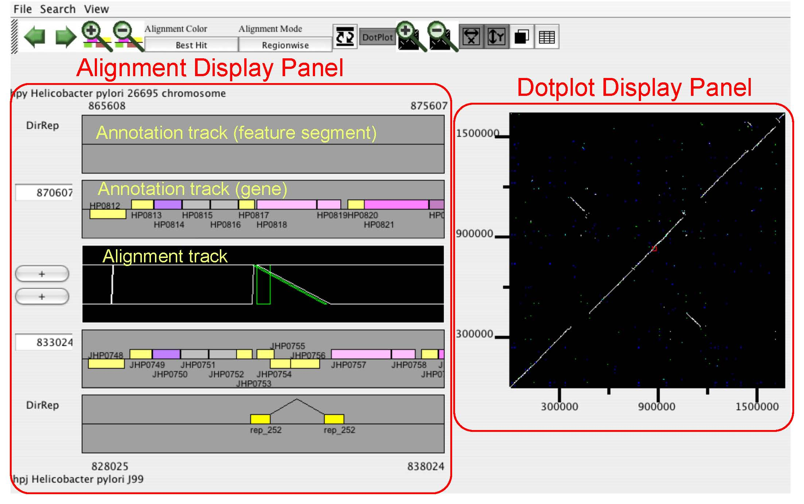

CGAT is a Comparative Genome Analysis Tool that was depeloped for
detailed comparison of closely related bacterial-sized genomes.
CGAT visualizes precomputed pairwise genome alignments
on both dotplot and alignment viewers. Users can put several
information on this alignment, such as existence of tandem repeats
or interspersed repetitive sequences and changes in codon usage bias,
to facilitate interpretation of the observed genomic changes.
Besides visualization functionalities,
CGAT also provides a general framework to process genome-scale
alignments using various existing alignment programs.
CGAT employs a client-server architecture, which consists of
AlignmentViewer (client; a Java application) and DataServer
(a set of Perl scripts). The DataServer package contains data construction
scripts and CGI scripts and the AlignmentViewer program visualizes the
alignment data obtained from the server thorough the HTTP protocol.
Reference
Uchiyama, I., Higuchi, T., Kobayashi, I.:
CGAT: a comparative genome analysis tool for visualizing alignments in the analysis of complex evolutionary changes between closely related genomes.
BMC Bioinformatics 2006, 7:472
|

|